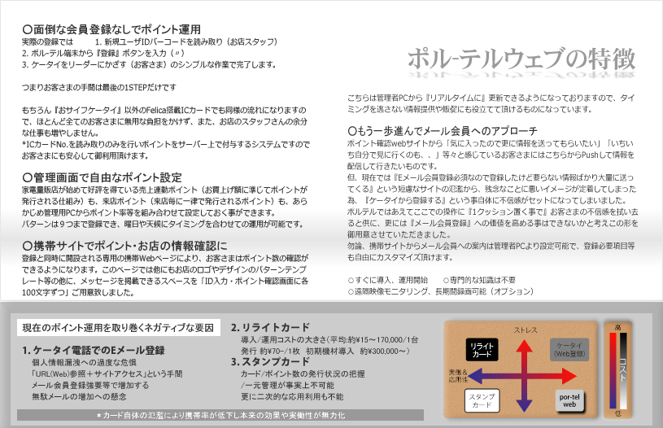

ポル-テルウェブの特徴
○面倒な会員登録なしでポイント運用 実際の登録では 1. 新規ユーザIDバーコードを読み取り（お店スタッフ） 2. ポル-テル端末から『登録』ボタンを入力（〃） 3. ケータイをリーダーにかざす（お客さま）のシンプルな作業で完了します。 つまりお客さまの手間は最後の1STEPだけです もちろん『おサイフケータイ』以外のFelica搭載ICカードでも同様の流れになりますので、ほとんど全てのお客さまに無用な負担をかけず、また、お店のスタッフさんの余分な仕事も増やしません。 *ICカードNo.を読み取りのみを行いポイントをサーバー上で付与するシステムですのでお客さまにも安心して御利用頂けます。 ○管理画面で自由なポイント設定 家電量販店が始めて好評を得ている売上連動ポイント（お買上げ額に準じてポイントが発行される仕組み）も、来店ポイント（来店毎に一律で発行されるポイント）も、あらかじめ管理用PCからポイント率等を組み合わせて設定しておく事ができます。 パターンは９つまで登録でき、曜日や天候にタイミングを合わせての運用が可能です。 ○携帯サイトでポイント・お店の情報確認に 登録と同時に開設される専用の携帯Webページにより、お客さまはポイント数の確認ができるようになります。このページでは他にもお店のロゴやデザインのパターンテンプレート等の他に、メッセージを掲載できるスペースを「ID入力・ポイント確認画面に各100文字ずつ」ご用意致しました。 こちらは管理者PCから『リアルタイムに』更新できるようになっておりますので、タイミングを逃さない情報提供や販促にも役立てて頂けるものになっています。 ○もう一歩進んでメール会員へのアプローチ ポイント確認webサイトから「気に入ったので更に情報を送ってもらいたい」「いちいち自分で見に行くのも、、」等々と感じているお客さまにはこちらからPushして情報を配信して行きたいものです。 但、現在では『Eメール会員登録必須なので登録したけど要らない情報ばかり大量に送ってくる』という短慮なサイトの氾濫から、残念なことに悪いイメージが定着してしまった為、『ケータイから登録する』という事自体に不信感がセットになってしまいました。 ポルテルではあえてここでの操作に『1クッション置く事で』お客さまの不信感を拭い去ると供に、更には『メール会員登録』への価値を高める事はできないかと考えこの形を御用意させていただきました。 勿論、携帯サイトからメール会員への案内は管理者PCより設定可能で、登録必要項目等も自由にカスタマイズ頂けます。 ○すぐに導入、運用開始 ○専門的な知識は不要 ○遠隔映像モニタリング、長期間録画可能（オプション） 現在のポイント運用を取り巻くネガティブな要因 1. ケータイ電話でのEメール登録 個人情報漏洩への過度な危惧 「URL(Web)参照＋サイトアクセス」という手間 メール会員登録強要等で増加する 無駄メールの増加への懸念 2. リライトカード 導入/運用コストの大きさ（平均:約\15～170,000/1台 発行 約\70-/1枚 初期機材導入 約\300,000～） 3. スタンプカード カード/ポイント数の発行状況の把握 /一元管理が事実上不可能 更に二次的な応用利用も不能 ＊カード自体の氾濫により携帯率が低下し本来の効果や実働性が無力化
